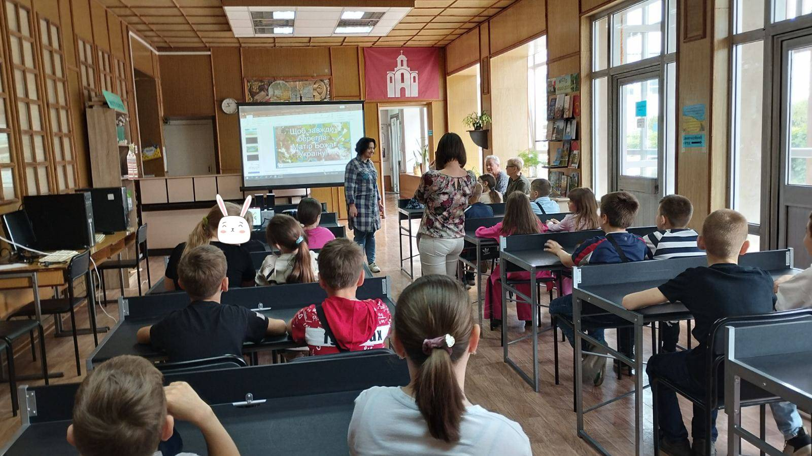
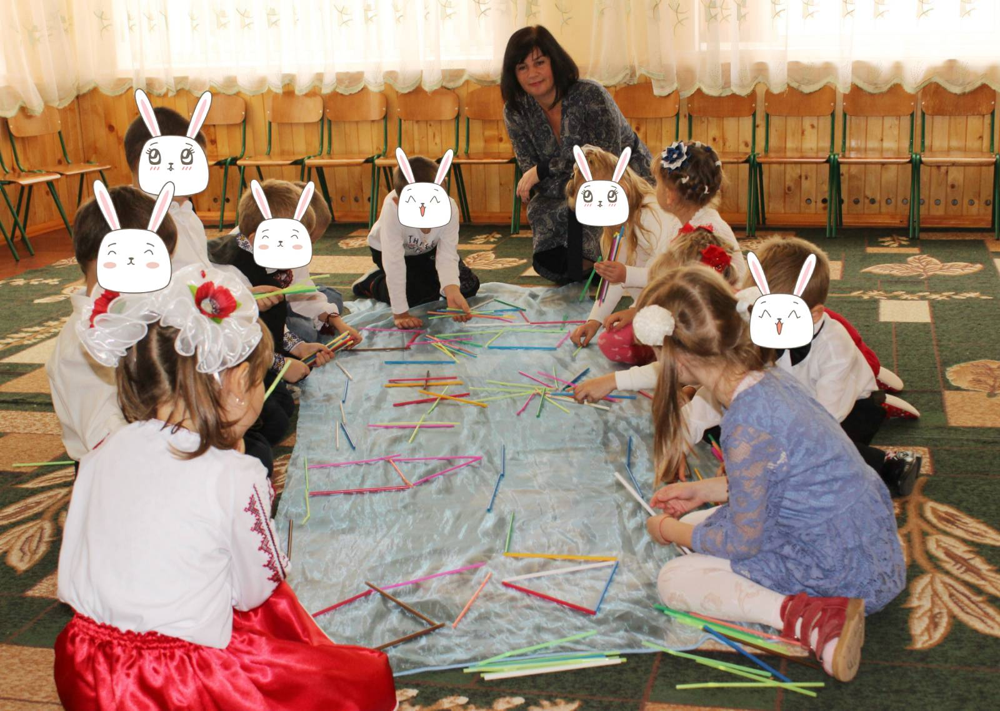
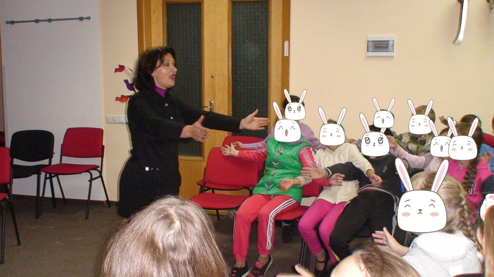

Ольга Безклинська
Підвищення інтелектуально-творчого потенціалу учнів засобами музикотерапії.
Постановка проблеми. Україна переживає складні, доленосні часи: йде війна за збереження цілісності і незалежності країни. Період радикальних зрушень примушує людську свідомість загострено сприймати історичні реалії. Трагічна подійність - війна, постає як екзистенціальна проблема нашої країни, пов'язана зі стражданнями людей, і знаходить власне відображення на психологічному здоров’ї усього народу. Особливу увагу потребують учасники бойових дій, що брали участь в антитерористичній операції. Після пережитих військових подій у більшості військовослужбовців залишається глибока душевна травма. Тому однією із актуальних проблем сучасного українського суспільства є психологічна допомога учасникам бойових дій. Це питання розглядається на державному рівні, задіяні громадські організації, значну методичну допомогу надають фахівці з інших країн, удосконалюються психолого-організаційні підходи. Особливої уваги заслуговує музикотерапія, яка ефективно використовується в багатьох країнах і рекомендується для практичного впровадження фахівцями, що займаються реабілітацією комбатантів з бойовою психічною травмою. [6] Музикотерапія, як показують сучасні дослідження - один із ефективних методів подолання екзистенціальних криз, корекції стресових станів, звільнення від психологічних травм і в цілому відновленню психічного здоров'я людини. Тому важливо розробити підходи щодо використання методів музикотерапії в комплексній реабілітації захисників України.
“Впровадження курсу «Музикотерапія» не потребує особливої організації навчального процесу, легко вписується в рамки класно-урочної та класно-виховної системи, а також може практикуватися в будь-який час упродовж навчального дня.”
Мета доповіді. Узагальнити результати запровадження музикотерапії для подолання екзистенціальних криз в учасників бойових дій.
Аналіз останніх досліджень і публікацій.
Дослідженням впливу музики на інтелектуальний та емоційний стан і розвиток дітей займаються сучасні філософи, науковці, педагоги: Побережна Г.І., Опанасюк О. П., Шабутін С. В., Хміль С. В., Шабутіна І. В., Якушева О.В., Петрушин В.І. та ін.. Аналіз стану досліджуваної проблеми доводить, що питання практичного використання музикотерапії в умовах школи не достатньо вивчене, спостерігаємо дефіцит сучасних досліджень й щодо проблеми впливу музики на розвиток дітей. Важливим завданням є навчання учнів свідомо добирати музичні твори для покращення інтелектуально-творчих здібностей, розвитку пам’яті, концентрації уваги, появи відчуттів упевненості, безпеки. Необхідно узагальнити сучасні дані щодо класифікації музичних стилів за їх терапевтичним ефектом.
Виклад основного матеріалу.
Музикотерапія на сучасному етапі розглядається як унікальна інтегративна оздоровча, психолого-педагогічна система. Для практичного запровадження музикотерапії нами була розроблена програма курсу за вибором «Музикотерапія», яка була схвалена Міністерством освіти і науки, молоді та спорту України, Інститутом інноваційних технологій і змісту освіти для використання у загальноосвітніх навчальних закладах (протокол №1 від 27 квітня 2012 р.). Основною метою курсу «Музикотерапія» є профілактика емоційно-стресових станів, розкриття інтелектуально-творчого потенціалу учнів та розвиток комунікативної культури.
Програма з курсу «Музикотерапія» розрахована на 35 годин на рік (1 год. на тиждень) і складається з п’яти тематичних блоків:
- 1. Музика і буття людини (5 годин).
- 2. Зміст предмету «Музикотерапія» (6 годин).
- 3. Гармонізація внутрішнього психологічного стану із зовнішнім світом за допомогою музикотерапії (8 годин).
- 4. Музика як один із ефективних засобів покращення навчальних досягнень учнів (8 годин).
- 5. Характеристика позитивного впливу музики на фізичне та психоемоційне здоров’я учнів (8 годин).
Впровадження курсу «Музикотерапія» не потребує особливої організації навчального процесу, легко вписується в рамки класно-урочної та класно-виховної системи, а також може практикуватися в будь-який час упродовж навчального дня.
Зміст програми може бути використаний як основа для проведення класних виховних годин, додаткових, факультативних занять, спецкурсів, занять груп продовженого дня. Доцільним і ефективним є фонове використання практичної частини програми на перервах, перед початком уроків (5-ти хвилинки), перед початком певної складної справи: зборів, поїздок, екскурсій, позакласних і позашкільних заходів. Застосування музикотерапії може одночасно відбуватись як у всіх класах загальноосвітніх навчальних закладів, так і в дорослих колективах. Навчальний матеріал структурований так, щоб зберегти поступальний логічний процес самовдосконалення, саморегуляції, найповніше розкрити психофізичні зв’язки з музикою та виявити всі потенційні гарні якості учнів.
Програма передбачає залучення до роботи не тільки учнів та вчителів, але й батьків, об’єднуючи зусилля для порозуміння, створення позитивної атмосфері в колективах та сім’ях.
Створюється площина, яка спонукає дітей замислюватися, розмірковувати про духовні закони життя , вічні цінності, свій духовний розвиток.
Програма з курсу «Музикотерапія» апробована в ліцеї № 157 м. Києва, в спеціалізованій загальноосвітній школі «Логос» №329 м. Київ , в ЗОШ № 17 м. Білої Церкви, у Шевченківській ЗОШ І – ІІ ступенів Вітовського району, Миколаївської області. Адаптована програма з музикотерапії лежить в основі роботи гуртка «Музикотерапія» реабілітаційному центрі «Шанс» для дітей хворих на ДЦП м. Білої Церкви.
“Програма передбачає залучення до роботи не тільки учнів та вчителів, але й батьків, об’єднуючи зусилля для порозуміння, створення позитивної атмосфері в колективах та сім’ях. ”
В Загальноосвітній школі №17 м. Білої Церкви, був проведений експеримент, метою якого було дослідження запровадження програми «Музикотерапія» в навчально-виховний процес. До участі були залучені учні 6-А та 6-В класів. Учні 6-В класу слухали методично підібрану музику, на початку деяких уроків, на перервах, вдома. Учні 6-А класу (контрольного) працювали в звичному режимі. В кінці навчального року було проведено аналіз зміни якісного показника рівня навчальних досягнень учнів в цілому з усіх предметів. Результати дослідження засвідчили зниження рівня навчальних досягнень учнів на кінець навчального року у 6-А класі в середньому на 10% та незмінність – у 6-В класі. Таким чином, впровадження курсу «Музикотерапії» дозволило досягти стабільних результатів у навчанні впродовж всього навчального року.
Висновки.
Запровадження програми «Музикотерапія» в навчально- виховний процес позитивно впливає на поліпшення якості сприйняття, засвоєння та усвідомлення пізнавальної інформації у учнів, створює позитивну атмосферу в колективах, що дозволяє рекомендувати використання навчальної програми «Музикотерапія» для загальноосвітніх навчальних закладах України.
Список літератури:
1. Опанасюк О. П. Розвиток творчих здібностей учнів ЗОШ на уроках музичного мистецтва: Методичний посібник / О. П. Опанасюк. – Львів : ЛОІППО, 2008. – 32 с.
2. Побережна Г.І. Музика в дитячій душі / Г.І. Побережна. - К.: Українське агентство інформації та друку «Рада», 2007. – 80 с.
3. Петрушин В.И. Музыкальная психотерапия: Теория и практика: учеб. пособие для студ. высш. учеб. заведений / В.И. Петрушин. - М.: Гуманит.изд. центр ВЛАДОС, 2011. – 76 с.
4. Шабутін С. В. Зцілення музикою / С. В. Шабутін, С. В. Хміль, І. В., Шабутіна. – Тернопіль : Підручники і посібники, 2006. – 192 с.
5. Якушева О.В. К проблеме изучения воздействия музыки на выполнение интеллектуальных задач подростками // Духовно-нравственное наследие И.П. Павлова и современная научная мысль: материалы 5-й Международной научно-практической конференции студентов и молодых ученых, 23-25 апреля 2010 года – Рязань: Ряз. гос. ун-т им. С.А. Есенина, 2010 – С. 44-46.